DIARI DEL PROJECTE
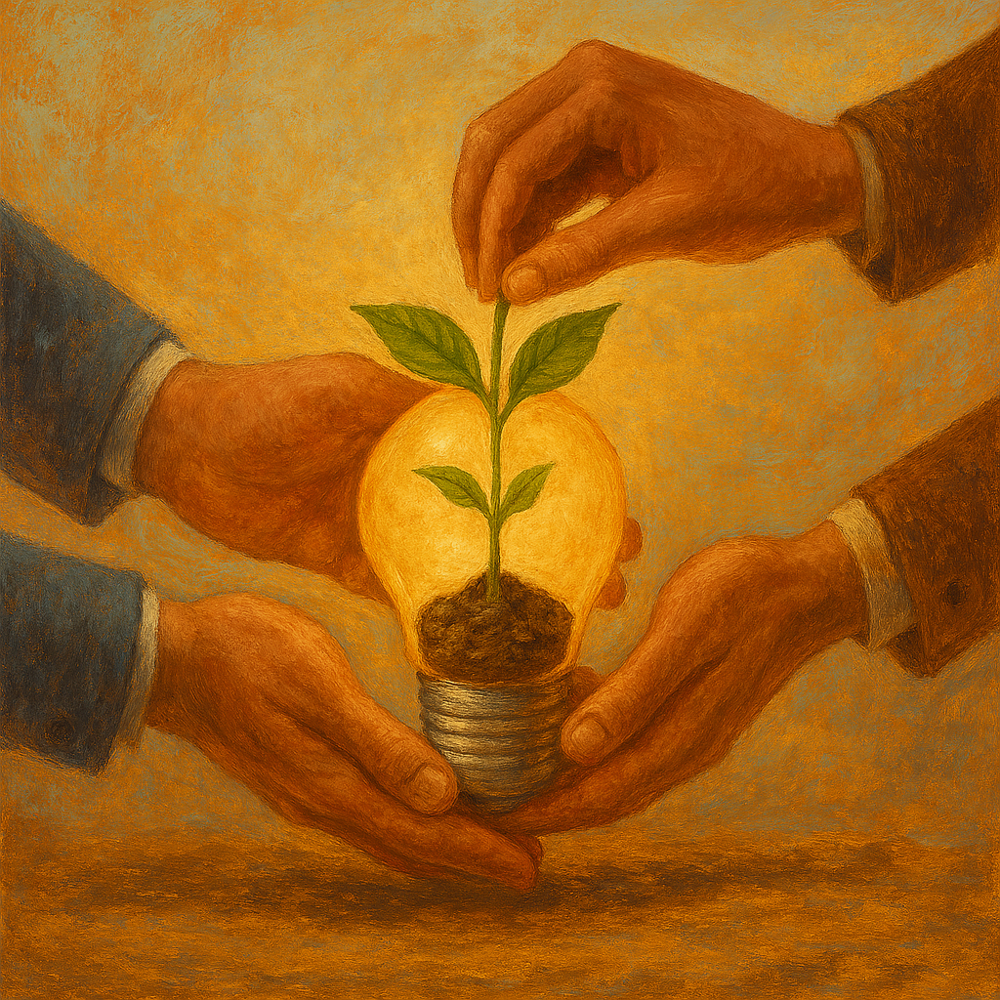
Semana 1 - Naixement del projecte
La primera semana es van assignar grups i rols, una vegada assignats els grups dediquem el dia per a pensar en la idea o idees que volíem desenvolupar, debatem unes certes idees conjuntament amb els membres del grup i al final havíem d'exposar la nostra idea al professorat perquè ens donessin la seva opinió.
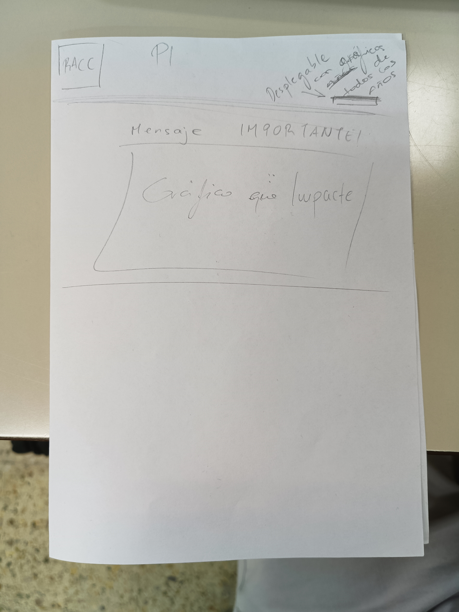
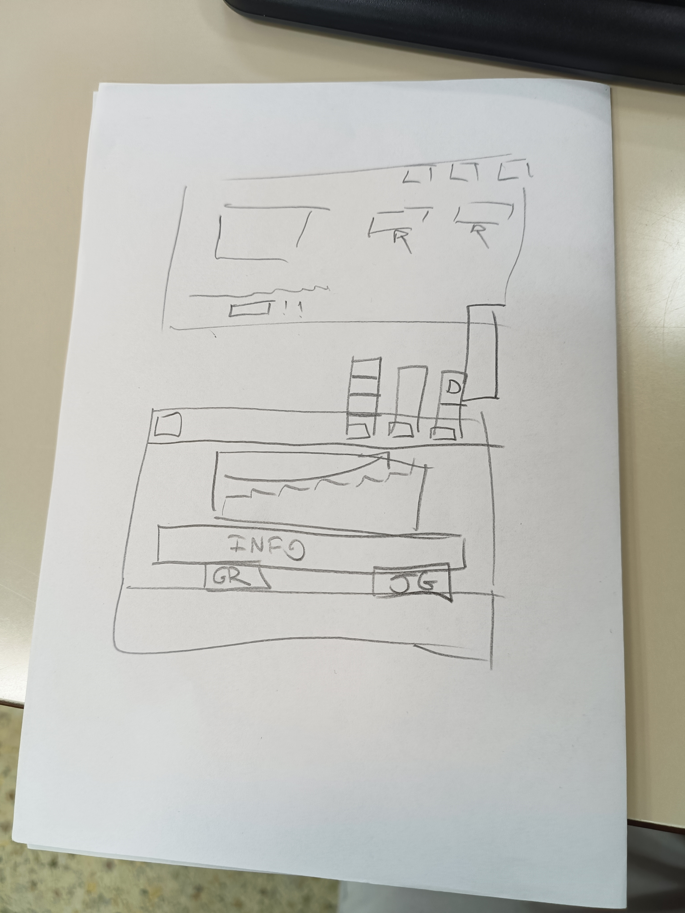
Semana 2 - Disseny "Página Principal"
La segona semana ens vam centrar en recopilar informació sobre accidents de trànsit des de 2016 fins a 2024. Els companys Hamza i Héctor van buscar i van organitzar tota les dades necessàries. Una vegada obtinguts les dades fiables, els netegem i organitzem per a poder analitzar-los i convertir-vos en gràfics clars i visuals.
A més es van dibuixar els esbossos del disseny de la possible "Pàgina Principal", es poden veure en les imatges següents
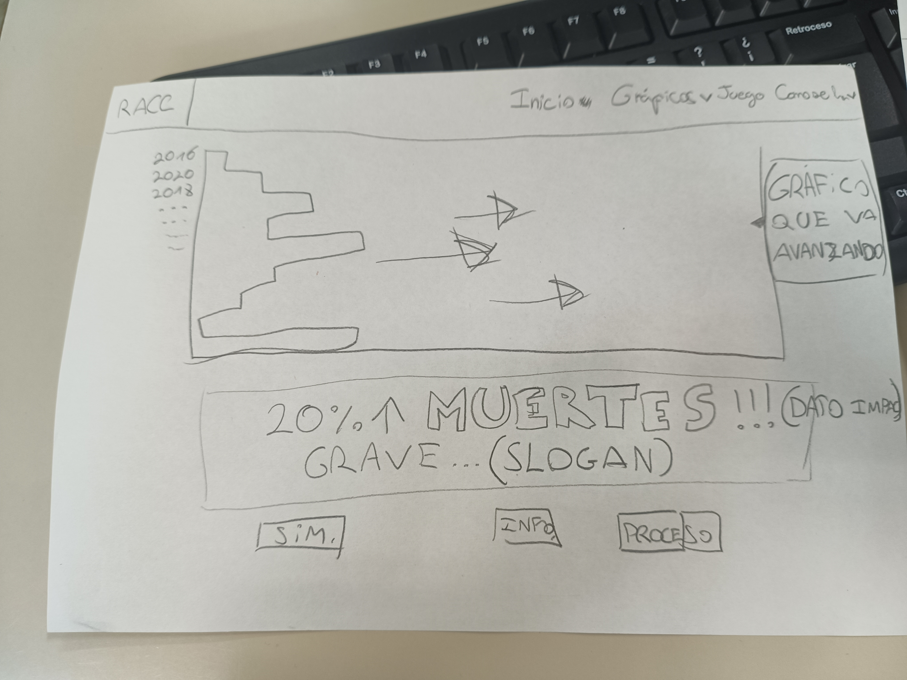
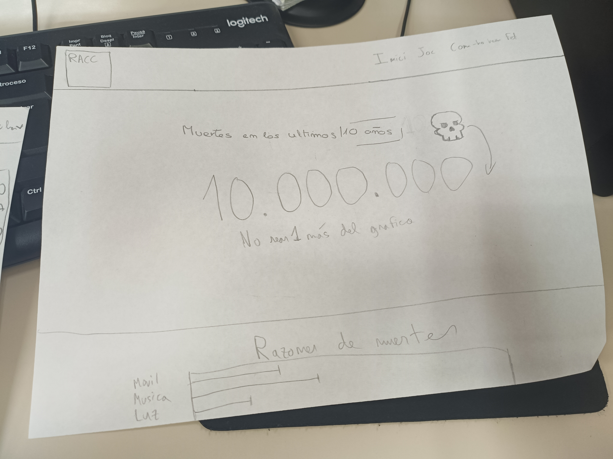
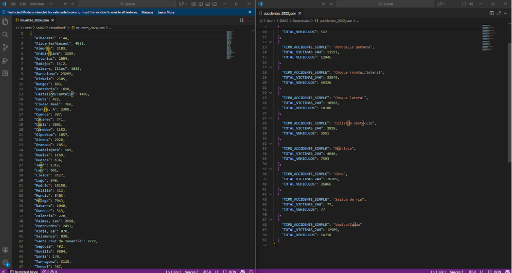
Semana 3 - Disseny "Gráfic Principal"
Aquesta semana s'ha enfocat a triar els gràfics que es visualitzaran en l'inici de la pàgina web. Els companys encarregats dels gràfics Héctor i Hamza es van encarregar d'anar creant amb Python en Google collab .json, els gràfics mostren la quantitat de morts a mesura que els anys avancen.
S'ha decidit que en la pàgina web principal es mostrés el gràfic que ensenya la quantitat de morts a mesura que avancen els anys, de moment la idea és aquesta.
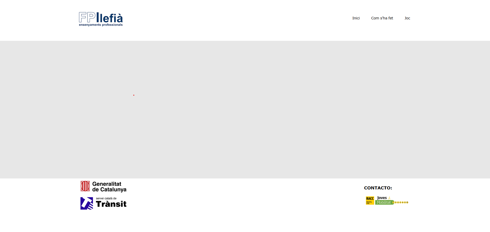
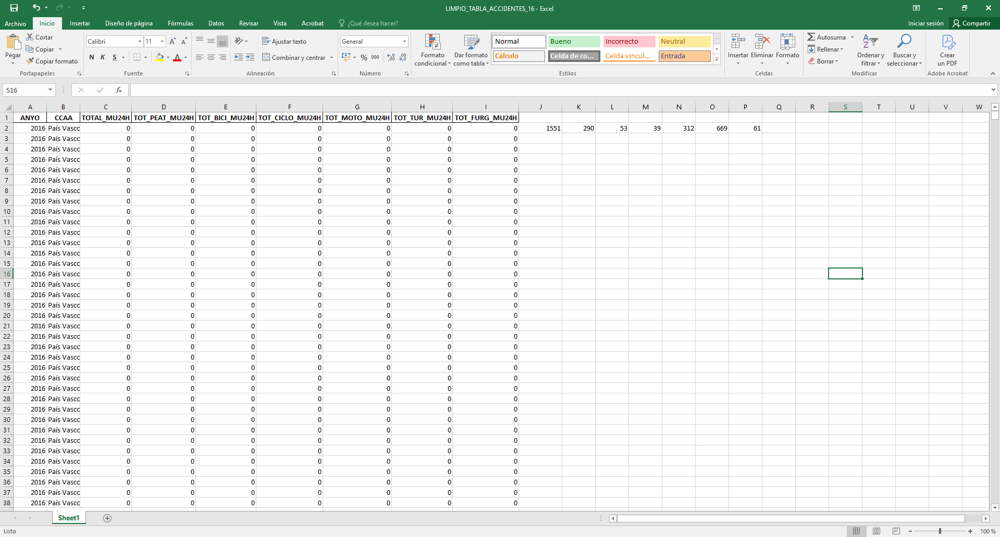
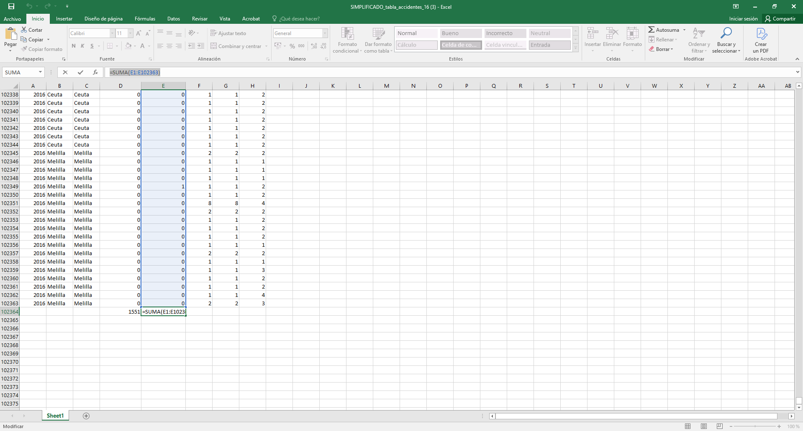
Semana 4 - Disseny "Encapçelament i Peu de Página"
La quarta semana es va acabar el disseny de l'encapçalat i el peu de pàgina per a totes les pàgines de la web.
A més Héctor i Hamza van comprovar que les dades que havien recopilat sobre els accidents de ela DGT eren correctes, aquestes dades las van guardar a un excel compartir, com es pot veure a la imatge.
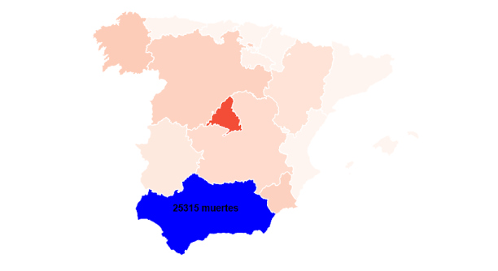
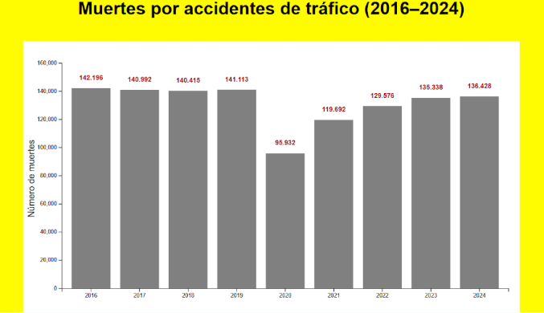
Semana 5 - Esbós del gráfics
La cinquena semana va ser per seguir buscant dades y crear esbossos dels possibles gráfcs per fer-nos una idea, també es va hanr fent mini ajustos a la página web sobre como sería aquest mateix diari per registrar tot el treball que estem realitzant, etc.
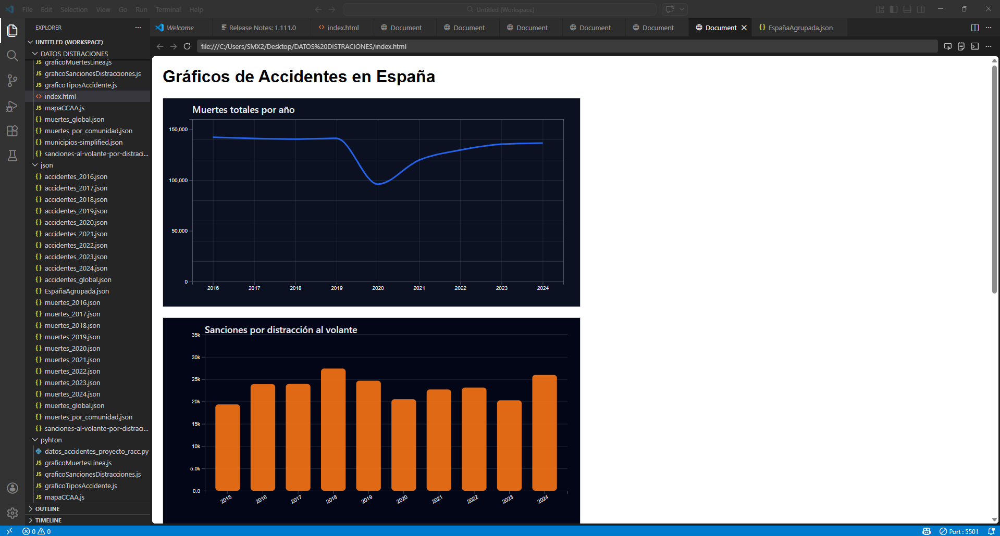
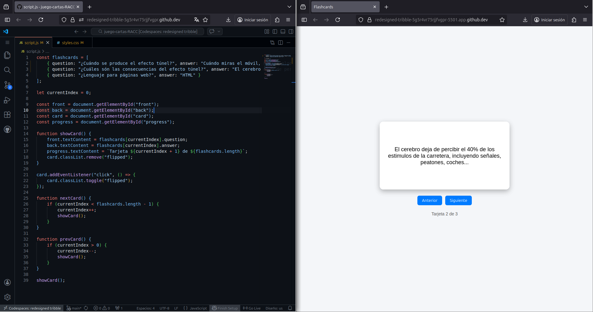
Semana 6 - Pretancament
Avui hem tingut una reunió amb el profesorat per exposar-los la nostra idea un altre cop com si no s'apiguessin res del concurs i menys del projecte, tot això amb la finalitat de demostrar el treball dur a terme fins al moment i per a fer-los veure que podem exposar la nostra idea de manera clara.
A més a més els gráfics que es veuran a la página principal seran els que es poden veure a les imatges.